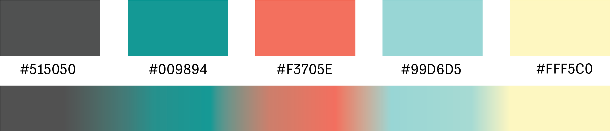
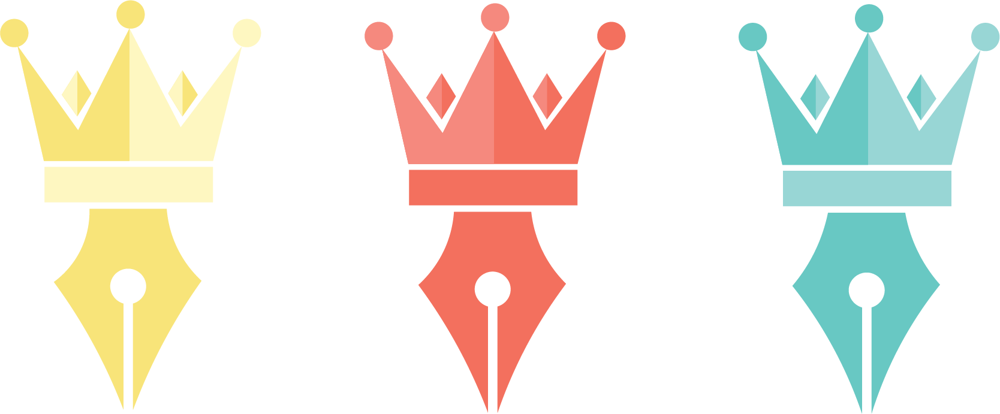
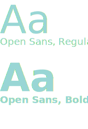

COLOUR PALETTE
The brands colour palette is based around multiple shades of dark and bright colours of grey and aqua which are contrasted with a light blue shade and complimented shades of a peach orange and pale yellow. I wanted to keep the colour scheme clean and sophisticated.

VISUAL MARQUE
Our brand is communicated through our Visual Marque, reflecting apoun the brands connection with on screen design and creativity. The crown represents my first name 'Sarah' which actually means princess in the Hebrew language. So, I wanted to use this to make the brand more unique and to also represent me. Therefore I created the illustration of the crown to portray that. In contrast, I wanted to include my relation within the design industry, this is defined through the pen illustration below the crown. Thus, these two merged together communicate both, the innovative yet fun aspect relating to the brand and its work.

MONOGRAM
The monogram is a combination of a two letters I designed using Illustrator. A Large Letter S and a smaller letter O, both representing my initials. I wanted to keep with the theme revolving the visual marque. I wanted the brand's monogram to have a joined up element and by doing so I wanted to enhance the curves that are situated with both these letters. Allowing it to flow smooth and naturally. Along with that, It's also a very precise and clean design, making it easily readable.
COLOUR VARIATIONS
The variety of colours linked to the brands colour palette, allows the branding material to be easily adapted. Thus, portraying different aspects of the brand through bright and lively colours. For that reason these colours shown should not be altered.

USAGE GUIDELINES:
- Do not rotate
- Do not change colour
- Do not use the monogram in combination with the visual marque.
- Do not change the direction of the monogram.
- Do not add additional special effects
- Do not animate visual marque or monogram
WORDMARK & TYPOGRAPHY
The brands typography is based on two san serif typefaces, Josefin Sans and Open Sans. San serif has been chosen to make typography used throughout branding material easily read, clean and overall tasteful. To style the brands typography for elements such as headings, sub-headings, quotes and body, a range of weights and styles are used. The typeface Open Sans has soley been used for the brands wordmark. The use of this font portrays the brands Name in a professional manner as well as making it pleasing to the viewers eye.

When both these typefaces are used in combination with the Visual Marque, the straight cut edges and sharp points compliment the angular shapes within the Visual Marque. in order to keep the branding consistant these angular shapes are used throughout all material. No other typefaces are permitted.
FONT STYLES
HEADING 1
JOSEFIN SANS, Bold, Caps.
HEADING 2
Josefin sans, Regular Caps.
HEADING 3
Josefin sans, Regular.
QUOTES
josefin sans, Italic.
PARAGRAPH EXAMPLE
HEY THERE!
-
My Name is Sarah Jane. I am a coding Graphic Designer based in Belfast. I am a student at Ulster University studying Interaction Design. I am always seeking anxiously to learn new techniques and explore the infinite prospects within design. So...I am looking forward to exploring the new ways of technology, whilst hoping to create and make my own impact on the world.